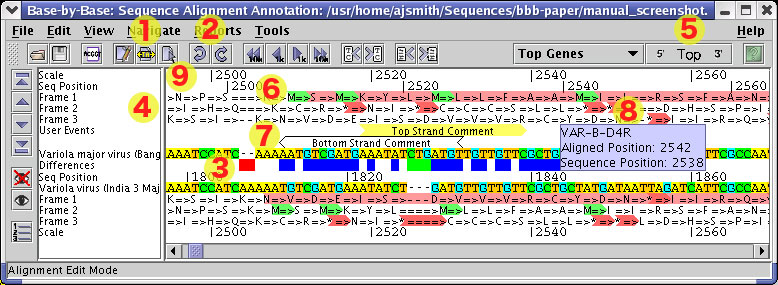

Back to Main
Back to Main
Below is a view of the main Base-By-Base display. This shows a general use situation in BBB comparing two viruses. The display is highlighted with numbers indicating interesting or useful features of the display. Each is listed below with a description of the feature, as well as a description of how to use it.
Base-By-Base currently has three mouse action modes. Edit Mode allows the user to insert and remove gaps from the sequences displayed on the screen. As sequence edits are made, the difference row is updated in real time. Glue Mode will move contiguous sections within a gap. For example, if the user had the following sequence:
AA----TCTAGTC----TAT
they could click and drag the 'TCTAGTC' fragment left and right within the larger gap region. Be aware that
sequence 'blocks' will adhere to each other if they come in contact, forming a larger block. In Select
Mode, users can select regions of sequence upon which to act using any of the features in the menus
above the display.
Users may undo inserts and deletes that have been done in the past. This allows for correction if too many gaps were inserted or too many gaps deleted.
Base-By-Base visually cues the differences between sequences by displaying coloured blocks indicating the type of difference. Below is a listing of the types of differences displayed in the difference pane.
Substitution: BLUE
Deletion: RED
Insertion: GREEN
This difference array is updated in real time as gaps are inserted and deleted. Left-clicking on a difference or series of similar differences will select the region of the alignment they represent in each of the selected sequences.
To turn on the three frame translation, click on the 'Show Translation' button on the sequence toolbar (to the left of the main display). See the Toolbar section for more information.
The three frame translations shows each frame of the sequence translated into the amino acids they represent. The frames hold across the entire sequence with allowances made for gaps in the sequence. Depending on preference, users may view the translation spaced out with arrows or with spaces. If arrows are chosen, the translation displays an arrow after the amino acid character that represents the sequence that coded for that amino acid. This is not always obvious due to the possibility of multiple gaps in random locations. If a gap occurs in the sequence that does not interrupt a codon, gaps are displayed in the translation as well.
For example:
CT----ACCCAGGAAAA-GCCAACC--AACC----TCGATCTCTTGT
L=====>P=>R=>K=>S==>Q=>P===>T=>----S=>I=>S=>C=>
In addition to displaying the amino acids in their translated frames, start and stop codons are also highlighted. These are highlighted in the direciton they are translated (depending on the strand displayed), and coloured appropriately. Start codons are highlighted in green, and stop codons are highlighted in red.
DNA Sequence data can be viewed in Base-By-Base from the perspective of either the top strand or the bottom, or complement, strand. The sequence is not reversed, however, so genes displayed on the bottom strand are displayed as translated from right to left. To change the strand displayed, click the button on the toolbar labelled either 'Top' or 'Bottom'. The label on the button indicates the current strand displayed and clicking the button toggles the display from one to the other.
Base-By-Base can import gene feature data from a VOCs database. For more information on the VOCs database, see the VOCs homepage. Genes are downloaded and ORFs displayed in BBB within the appropriate frames in the 3 frame translation. If viewing the top strand, genes are displayed in red. When appropriate, genes on the bottom strand are displayed in blue. As with the 3 frame translation, genes are appropriately spaced out to make allowances for gaps in the alignment.
To move to a particular gene, simply select it in the genes pulldown menu in the toolbar. The genes displayed in this pulldown are only those genes within the current display area and on the current display strand.
To get more information on the alignment of a gene against another sequence, simply double click on that gene on the display. The following information is then calculated and displayed:
|
|
This essentially amounts to one row in the CDS Statistics report. More information on this is available Here. Additionally, left-clicking on a gene selects the region of sequence that it covers (in the selected sequences).
Any region of sequence may be annotated with a user comment. This user comment has four distinct properties which are stored when the current file is saved. These are the text of the comment, the position on the sequence, the direction (strand) in which the comment exists, and the colors to display.
To create a comment, select a region of sequence and select the 'Add Comment...' entry in the Tools menu. Enter the comment, select display colors and click 'Ok'. The comment will be displayed in the 'User Events' channel and be represented by an arrow pointing in the direction translation occurs in the currently displayed strand. To remove a comment, click on it and select 'Remove Comment' from the Tools menu.
To edit a prexisting comment, simply double click on it and the same window used to create the comment will be displayed to edit it. Single clicking on a comment will select the region of sequence in which it is relevant.
Base-By-Base updates the tooltip for the display area in real time. If the mouse is left to hover a portion of the display area, any pertinent information will be displayed in a tooltip for the mouse pointer. The sequence position and position within the alignment is always shown. If the pointer is over a gene, the gene name will be displayed. If the pointer is over a user comment, the comment will be displayed.
Two distinct scales are displayed in Base-By-Base. These are the sequence positional scale and the alignment positional scale. The sequence scale indicates the position along the sequence ignoring gaps. This means the scale is spaced out for gaps and is not displayed uniformly across the entire sequence. The alignment scale displays positions that include the gaps. This is more of a 'global' scale and is the same for each sequence in the display. It is more of a marker for the entire display than the sequence scale is.